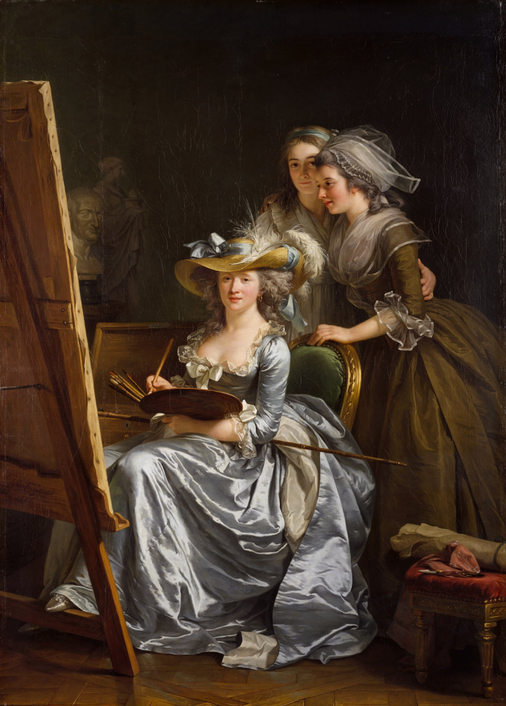
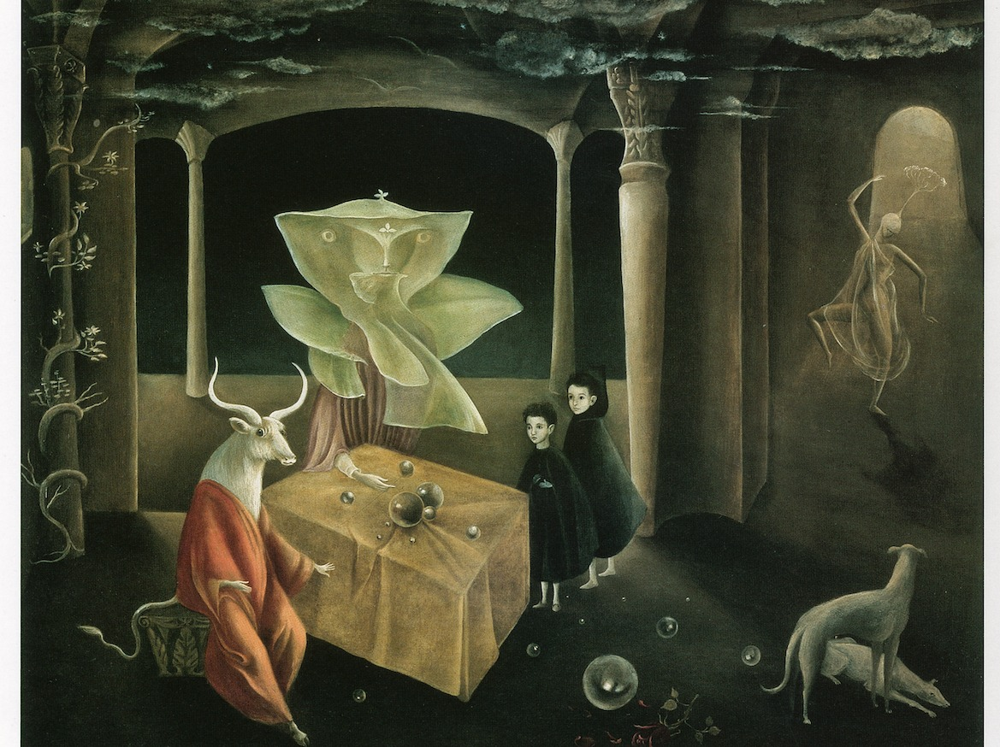

1741–1807
Angelica Kauffmann
Pittrice neoclassica di fama europea, tra i fondatori della Royal Academy.
Apri la schedaPercorso cronologico
Nel Settecento il ritratto, il pastello e la cultura delle accademie offrirono nuove occasioni, pur in un sistema ancora fortemente limitante per le donne.
1741–1807
Pittrice neoclassica di fama europea, tra i fondatori della Royal Academy.
Apri la scheda
1749–1803
Ritrattista francese del Settecento e sostenitrice della formazione artistica femminile.
Apri la scheda

1768–1826
Pittrice neoclassica francese, nota per ritratti intensi e moderni.
Apri la scheda